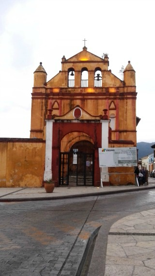
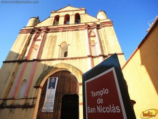
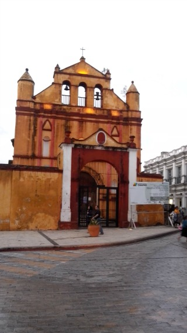
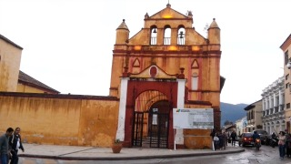
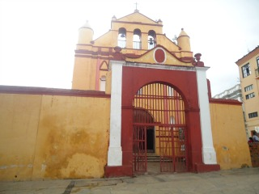

La iglesia de San Nicolás ocupa la parte posterior de la Catedral de San Cristóbal de Las Casas. Utilizada actualmente como Museo Diocesano, su construcción recuerda el estilo mudéjar; de una sola nave y techada con artesón y cubierta con un techo piramidal de dos aguas construido en madera y teja, es la única de las iglesias de la ciudad que mantiene su forma primigenia, catalogada dentro de la categoría estilística de iglesia de "pueblo de indios".
Se encuentra ubicada en la Calle Guadalupe Victoria esquina con la Avenida General Utrilla. Detrás de la Iglesia de Catedral.
Si usted se encuentra ubicado en la plaza de la paz viendo de frente hacia la catedral puede caminar hacia su derecha sobre la calle Guadalupe Victoria a un costado de la catedral dirigiendose hacía el andador Guadalupano y justo al llegar a la esquina verá la iglesia de San Nicolás.
En el lugar usted puede realizar actividades como:
* Fotografía
* Visita a lugares históricos
* Visita a iglesias
* Manifestaciones Religiosas





posicione el mouse sobre las imágenes